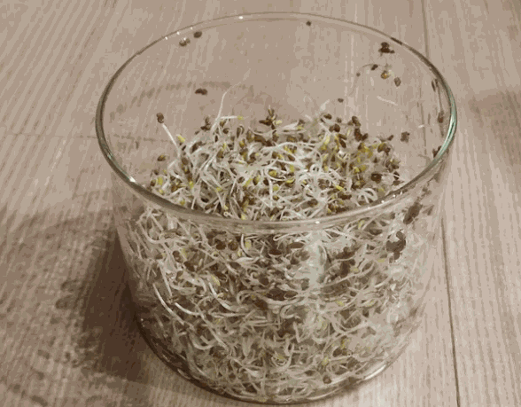

ガラス容器でアルファルファスプラウトを育てる
本記事では、どこにでもあるガラス容器を使ってスプラウトを育てる方法を紹介します。
スプラウトは根っこにも栄養があるのですが、普通の方法では根っこは培地に絡まってしまい食べられません。
がしかし、この方法で育てると、根っこまで食べることができます！
栄養満点のスプラウトを余すところなく摂取できますので、是非試してみてください。
スプラウトでメジャーなものはブロッコリースプラウトですが、今回はアルファルファスプラウトを育ててみました。
0. 用意するもの
- ガラス容器
- 水切りネット
- 種

アルファルファスプラウトの種は楽天で購入できます！
1. 容器を綺麗にする
スプラウト育成は雑菌が一番の敵です。
使用する前にしっかり洗います。
できれば熱湯消毒や、食用品向けの消毒スプレーなどで消毒すると良いです。
2. 容器に種を入れて水に浸す
容器に種を出し、半日ほど水に浸して発芽を促します。

3. 水切りネットを被せて水を切る
水切りネットを被せ、水を切ります。
2-3回水ですすいだら、水を切って暗いところに置いておきます。
（水気が残ると傷みやすいので、よくよく水を切っておきます。）
アルミホイルや手ぬぐいなどを被せて遮光しても大丈夫です。

4. 一日二回水で濯ぐ
朝晩1回ずつ水で濯ぎます。
1週間くらいでだいぶ成長するので、光を当てて緑化します。
水で灌ぐのを忘れると傷んでしまうので、こまめに行います。


5. 収穫する
1-2日光をあてて、緑色になったら収穫します。
ボールにあけて、浮かんできた種を取ります。
種は食べても大丈夫ですが、できる限り取り除いた方が美味しく食べられます。

最後に
スプラウトは、種まきから収穫までが短く、だいたい1週間くらいで収穫できます。
種を取るのが少し面倒ですが、それ以外は水ですすぐだけなので簡単に育てることができます。
自分で育てたスプラウトは市販のものより美味しく感じます。
キッチン横のちょっとしたスペースで育てられるので、是非試してみてください。
 (twitter)でも水耕栽培を投稿していますので、良かったらフォローお願いします！
(twitter)でも水耕栽培を投稿していますので、良かったらフォローお願いします！
ニンニクスプラウト伸びてきた！どのくらいで収穫して良いんだろう、もう少し様子を見てみるかな。
— YU＠水耕栽培やってます (@UrbanVegeOasis) December 16, 2023
アルファルファスプラウトは明日食べれそうだね〜。 pic.twitter.com/1eZVDfSFP1
ブロッコリースプラウト7日目。
— YU＠水耕栽培やってます (@UrbanVegeOasis) December 5, 2023
明日収穫だね〜。アルミホイルで遮光してるのだけど少し緑になってしまった。 pic.twitter.com/ZZ0Jqmy0Z7